<!DOCTYPE html>
<html lang="en">
  <head>
    <meta charset="utf-8" />
    <meta name="viewport" content="width=device-width, initial-scale=1.0, maximum-scale=1.0, user-scalable=no" />

    <title></title>
    <link rel="stylesheet" href="dist/reveal.css" />
    <link rel="stylesheet" href="dist/theme/custom1.css" id="theme" />
    <link rel="stylesheet" href="plugin/highlight/atom-one-light.css" />
	<link rel="stylesheet" href="css/layout.css" />
	<link rel="stylesheet" href="plugin/customcontrols/style.css">
	<link rel="stylesheet" href="plugin/chalkboard/style.css">


    <script defer src="dist/fontawesome/all.min.js"></script>

	<script type="text/javascript">
		var forgetPop = true;
		function onPopState(event) {
			if(forgetPop){
				forgetPop = false;
			} else {
				parent.postMessage(event.target.location.href, "app://obsidian.md");
			}
        }
		window.onpopstate = onPopState;
		window.onmessage = event => {
			if(event.data == "reload"){
				window.document.location.reload();
			}
			forgetPop = true;
		}

		function fitElements(){
			const itemsToFit = document.getElementsByClassName('fitText');
			for (const item in itemsToFit) {
				if (Object.hasOwnProperty.call(itemsToFit, item)) {
					var element = itemsToFit[item];
					fitElement(element,1, 1000);
					element.classList.remove('fitText');
				}
			}
		}

		function fitElement(element, start, end){

			let size = (end + start) / 2;
			element.style.fontSize = `${size}px`;

			if(Math.abs(start - end) < 1){
				while(element.scrollHeight > element.offsetHeight){
					size--;
					element.style.fontSize = `${size}px`;
				}
				return;
			}

			if(element.scrollHeight > element.offsetHeight){
				fitElement(element, start, size);
			} else {
				fitElement(element, size, end);
			}		
		}


		document.onreadystatechange = () => {
			fitElements();
			if (document.readyState === 'complete') {
				if (window.location.href.indexOf("?export") != -1){
					parent.postMessage(event.target.location.href, "app://obsidian.md");
				}
				if (window.location.href.indexOf("print-pdf") != -1){
					let stateCheck = setInterval(() => {
						clearInterval(stateCheck);
						window.print();
					}, 250);
				}
			}
	};


        </script>
  </head>
  <body>
    <div class="reveal">
      <div class="slides"><section  data-markdown><script type="text/template"><!-- .slide: class="drop" -->
<div class="" style="position: absolute; left: 0px; top: 0px; height: 700px; width: 960px; min-height: 700px; display: flex; flex-direction: column; align-items: center; justify-content: center" absolute="true">

# Making Decisions
</div></script></section><section  data-markdown><script type="text/template"><!-- .slide: class="drop" -->
<div class="" style="position: absolute; left: 0px; top: 0px; height: 700px; width: 960px; min-height: 700px; display: flex; flex-direction: column; align-items: center; justify-content: center" absolute="true">

## How Programs Normally Run: Sequential Flow

Typically, a computer executes your code in **sequence**. It starts at the top of your `main` method and runs one instruction at a time, line by line, until it reaches the end.

```java
// 1. First, this line runs.
System.out.println("Step 1: Starting the program.");

// 2. Then, this line runs.
int a = 10;

// 3. Finally, this line runs.
System.out.println("Step 3: The program is finished.");
```

This is called **sequential flow**. It's predictable and straightforward.
</div></script></section><section  data-markdown><script type="text/template"><!-- .slide: class="drop" -->
<div class="" style="position: absolute; left: 0px; top: 0px; height: 700px; width: 960px; min-height: 700px; display: flex; flex-direction: column; align-items: center; justify-content: center" absolute="true">

## Changing the Path: Control Flow
But what if we don't want to run every line? Sometimes we need to **skip** lines or **choose** which lines to run. This is called changing the **control flow**.

You've already seen one way to do this: **methods**. When you call a method, the program's execution _jumps_ to the method's code, runs it, and then jumps back.

Today, we're learning the most common way to change the flow: making decisions with `if` and `else` statements. This lets our program react differently to different situations.
</div></script></section><section  data-markdown><script type="text/template"><!-- .slide: class="drop" -->
<div class="" style="position: absolute; left: 0px; top: 0px; height: 700px; width: 960px; min-height: 700px; display: flex; flex-direction: column; align-items: center; justify-content: center" absolute="true">

## How Do We Make Decisions?
In everyday life, we make decisions based on questions:

- **If** it is raining, **then** I will take an umbrella.
    
- **If** I am hungry, **then** I will eat a snack.
    

Computers do the same thing! They ask questions and perform actions based on whether the answer is **true** or **false**. In Java, these `true` or `false` values are called **booleans**.
</div></script></section><section  data-markdown><script type="text/template"><!-- .slide: class="drop" -->
<div class="" style="position: absolute; left: 0px; top: 0px; height: 700px; width: 960px; min-height: 700px; display: flex; flex-direction: column; align-items: center; justify-content: center" absolute="true">

## Asking Questions with Comparison Operators
We ask questions in code by comparing values. These operators give us a `true` or `false` answer.

|Operator|Description|Example|Answer|
|---|---|---|---|
|`==`|Is this equal to that?|`5 == 5`|`true`|
|`!=`|Is this **not** equal to that?|`10 != 5`|`true`|
|`>`|Is this greater than that?|`10 > 5`|`true`|
|`<`|Is this less than that?|`10 < 5`|`false`|
|`>=`|Is this greater than or equal to that?|`5 >= 5`|`true`|
|`<=`|Is this less than or equal to that?|`5 <= 10`|`true`|

These questions are called **conditions**.
</div></script></section><section ><section data-markdown><script type="text/template"><!-- .slide: class="drop" -->
<div class="" style="position: absolute; left: 0px; top: 0px; height: 700px; width: 960px; min-height: 700px; display: flex; flex-direction: column; align-items: center; justify-content: center" absolute="true">

## The `if` Statement: Making a Simple Choice
The `if` statement runs a block of code _only if_ its condition is `true`.

**Structure:**

```java
if (condition is true) {
    // ...run the code inside these curly braces.
}
```
</div></script></section><section data-markdown><script type="text/template"><!-- .slide: class="drop" -->
<div class="" style="position: absolute; left: 0px; top: 0px; height: 700px; width: 960px; min-height: 700px; display: flex; flex-direction: column; align-items: center; justify-content: center" absolute="true">

**Example:**

```java
int score = 100;

if (score > 50) {
    System.out.println("Congratulations, that's a high score!");
}
// Code continues here...
```
</div></script></section></section><section ><section data-markdown><script type="text/template"><!-- .slide: class="drop" -->
<div class="" style="position: absolute; left: 0px; top: 0px; height: 700px; width: 960px; min-height: 700px; display: flex; flex-direction: column; align-items: center; justify-content: center" absolute="true">

## Visualizing Logic with Flowcharts


A **flowchart** is a diagram that shows the step-by-step logic of a program. It helps us "see" the different paths our code can take.
- **Ovals:** Mark the Start and End points.
- **Rectangles:** Represent a process or action (e.g., `System.out.println(...)`).
- **Diamonds:** Represent a decision or a question (an `if` condition). They always have at least two paths coming out of them (e.g., `true` and `false`).
</div></script></section><section data-markdown><script type="text/template"><!-- .slide: class="drop" -->
<div class="" style="position: absolute; left: 0px; top: 0px; height: 700px; width: 960px; min-height: 700px; display: flex; flex-direction: column; align-items: center; justify-content: center" absolute="true">

<div style="display: flex; justify-content: space-between;">

<div style="width: 60%;">

```java
int score = 100;

if (score > 50) {
    System.out.println("Congratulations, that's a high score!");
}
// Code continues here...
```

</div>

<div style="width: 40%;">





</div>

</div>
</div></script></section></section><section ><section data-markdown><script type="text/template"><!-- .slide: class="drop" -->
<div class="" style="position: absolute; left: 0px; top: 0px; height: 700px; width: 960px; min-height: 700px; display: flex; flex-direction: column; align-items: center; justify-content: center" absolute="true">

## The `if-else` Statement: Choosing Between Two Paths

Use `if-else` when you want to do one thing if the condition is `true`, and a _different_ thing if it's `false`.

**Structure:**

```java
if (condition is true) {
    // ...run this block of code.
} else {
    // ...otherwise, run this block instead.
}
```
</div></script></section><section data-markdown><script type="text/template"><!-- .slide: class="drop" -->
<div class="" style="position: absolute; left: 0px; top: 0px; height: 700px; width: 960px; min-height: 700px; display: flex; flex-direction: column; align-items: center; justify-content: center" absolute="true">

**Example:**

```java
boolean isRaining = true;

if (isRaining) {
    System.out.println("Take an umbrella.");
} else {
    System.out.println("Enjoy the sunshine!");
}
// Code continues here...
```
</div></script></section><section data-markdown><script type="text/template"><!-- .slide: class="drop" -->
<div class="" style="position: absolute; left: 0px; top: 0px; height: 700px; width: 960px; min-height: 700px; display: flex; flex-direction: column; align-items: center; justify-content: center" absolute="true">

<div style="display: flex; justify-content: space-between;">

<div style="width: 60%;">

```java
boolean isRaining = true;
if (isRaining) {
    System.out.println("Take an umbrella.");
} else {
    System.out.println("Enjoy the sunshine!");
}
// Code continues here...
```

</div>

<div style="width: 40%;">





</div>

</div>
</div></script></section></section><section ><section data-markdown><script type="text/template"><!-- .slide: class="drop" -->
<div class="" style="position: absolute; left: 0px; top: 0px; height: 700px; width: 960px; min-height: 700px; display: flex; flex-direction: column; align-items: center; justify-content: center" absolute="true">

## The `if-else if-else` Chain: For Multiple Choices
What if you have more than two options? You can chain them together. The computer checks each condition in order until it finds one that is `true`.

**Example:**

```java
int temperature = 20; // in Celsius

if (temperature > 30) {
    System.out.println("It's hot outside.");
} else if (temperature > 15) {
    System.out.println("It's warm and pleasant."); // This runs
} else {
    System.out.println("It's cold, bring a jacket.");
}
// It checks if 20 > 30 (false), then checks if 20 > 15 (true) and runs that block.
```
</div></script></section><section data-markdown><script type="text/template"><!-- .slide: class="drop" -->
<div class="" style="position: absolute; left: 0px; top: 0px; height: 700px; width: 960px; min-height: 700px; display: flex; flex-direction: column; align-items: center; justify-content: center" absolute="true">

### Flowchart


</div></script></section></section><section  data-markdown><script type="text/template"><!-- .slide: class="drop" -->
<div class="" style="position: absolute; left: 0px; top: 0px; height: 700px; width: 960px; min-height: 700px; display: flex; flex-direction: column; align-items: center; justify-content: center" absolute="true">

## Combining Conditions: The AND (`&&`) Operator
Sometimes you need two things to be `true` at the same time. The `&&` operator checks this.

**It's `true` only if the condition on the left AND the condition on the right are both `true`.**

**Example:**

```java
int age = 25;
boolean hasTicket = true;

if (age >= 18 && hasTicket) {
    System.out.println("Welcome to the event!"); // Prints
} else {
    System.out.println("Sorry, you cannot enter.");
}
```
</div></script></section><section  data-markdown><script type="text/template"><!-- .slide: class="drop" -->
<div class="" style="position: absolute; left: 0px; top: 0px; height: 700px; width: 960px; min-height: 700px; display: flex; flex-direction: column; align-items: center; justify-content: center" absolute="true">

## Combining Conditions: The OR (`||`) Operator

Sometimes you only need _one_ of two conditions to be `true`. The `||` operator checks this.

**It's `true` if the condition on the left OR the condition on the right (or both) are `true`.**

**Example:**

```java
boolean isWeekend = true;
boolean isHoliday = false;

if (isWeekend || isHoliday) {
    System.out.println("You get to sleep in today!"); // Prints
} else {
    System.out.println("Time to get up for work!");
}
```
</div></script></section><section  data-markdown><script type="text/template"><!-- .slide: class="drop" -->
<div class="" style="position: absolute; left: 0px; top: 0px; height: 700px; width: 960px; min-height: 700px; display: flex; flex-direction: column; align-items: center; justify-content: center" absolute="true">

## Inverting a Condition: The NOT (`!`) Operator

The `!` operator flips a boolean value. It turns `true` to `false` and `false` to `true`.

**It's useful for checking if something is `false`.**

**Example:**

```java
boolean isDoorLocked = false;

if (!isDoorLocked) { // This reads as "if the door is NOT locked"
    System.out.println("You can enter."); // Prints
}
```
</div></script></section><section  data-markdown><script type="text/template"><!-- .slide: class="drop" -->
<div class="" style="position: absolute; left: 0px; top: 0px; height: 700px; width: 960px; min-height: 700px; display: flex; flex-direction: column; align-items: center; justify-content: center" absolute="true">

## Important Tip: Comparing Strings

A common mistake is using `==` to compare strings. Because `String` is an object, `==` checks if they are the exact same object in memory, not if they have the same letters.

**Always use the `.equals()` method to see if two strings have the same content.**


```java
String password = "let-me-in";

// Correct way
if (password.equals("let-me-in")) {
    System.out.println("Access Granted."); // Correct!
}

// Incorrect way - might work sometimes, but is not reliable!
if (password == "let-me-in") {
    // Don't do this!
}
```
</div></script></section><section  data-markdown><script type="text/template"><!-- .slide: class="drop" -->
<div class="" style="position: absolute; left: 0px; top: 0px; height: 700px; width: 960px; min-height: 700px; display: flex; flex-direction: column; align-items: center; justify-content: center" absolute="true">

## Summary

- **`if`**: Runs code if a condition is `true`.
    
- **`if-else`**: Chooses between two pieces of code.
    
- **`if-else if-else`**: Chooses between many pieces of code.
    
- **`&&` (AND)**: Used when both conditions must be true.
    
- **`||` (OR)**: Used when at least one condition must be true.
    
- **`!` (NOT)**: Flips `true` to `false` and `false` to `true`.
    
- Always use **`.equals()`** to compare the content of strings!
</div></script></section><section ><section data-markdown><script type="text/template"><!-- .slide: class="drop" -->
<div class="" style="position: absolute; left: 0px; top: 0px; height: 700px; width: 960px; min-height: 700px; display: flex; flex-direction: column; align-items: center; justify-content: center" absolute="true">

### Worksheet: Java Conditionals Practice (8 Problems)

**Instructions:** For each problem, write the Java code inside a `main` method that solves the prompt. Use `System.out.println()` to print your results.

<mark>**[Write your code here](https://onecompiler.com/java)**</mark>
</div></script></section><section data-markdown><script type="text/template"><!-- .slide: class="drop" -->
<div class="" style="position: absolute; left: 0px; top: 0px; height: 700px; width: 960px; min-height: 700px; display: flex; flex-direction: column; align-items: center; justify-content: center" absolute="true">

**Problem 1: Movie Age Check (`if`)**

The minimum age to see a movie is 13. Given an integer age, write an if statement that prints "You can watch the movie." but only if the age is 13 or older.
</div></script></section><section data-markdown><script type="text/template"><!-- .slide: class="drop" -->
<div class="" style="position: absolute; left: 0px; top: 0px; height: 700px; width: 960px; min-height: 700px; display: flex; flex-direction: column; align-items: center; justify-content: center" absolute="true">

**Problem 2: Passing Grade (`if-else`)**

A student passes a class if their score is 60 or higher. Given an integer score, write an if-else statement that prints "Pass" if the score is 60 or higher, and prints "Fail" otherwise.
</div></script></section><section data-markdown><script type="text/template"><!-- .slide: class="drop" -->
<div class="" style="position: absolute; left: 0px; top: 0px; height: 700px; width: 960px; min-height: 700px; display: flex; flex-direction: column; align-items: center; justify-content: center" absolute="true">

**Problem 3: Temperature Guide (`if-else if-else`)**

Write a program that suggests what to wear based on the temperature. Given an integer temp:

- If `temp` is above 80, print "`Wear shorts.`".
    
- If `temp` is between 60 and 80 (inclusive), print "`Wear a light jacket.`".
    
- If `temp` is below 60, print "`Wear a heavy coat.`".
</div></script></section><section data-markdown><script type="text/template"><!-- .slide: class="drop" -->
<div class="" style="position: absolute; left: 0px; top: 0px; height: 700px; width: 960px; min-height: 700px; display: flex; flex-direction: column; align-items: center; justify-content: center" absolute="true">

**Problem 4: Roller Coaster Access (`&&`)**

To ride a roller coaster, a person must be at least 12 years old AND at least 48 inches tall. Given an int age and an int height, write an if statement that prints "Cleared for takeoff!" only if both conditions are met.
</div></script></section><section data-markdown><script type="text/template"><!-- .slide: class="drop" -->
<div class="" style="position: absolute; left: 0px; top: 0px; height: 700px; width: 960px; min-height: 700px; display: flex; flex-direction: column; align-items: center; justify-content: center" absolute="true">

**Problem 5: Day Off (`||`)**

You get the day off if it's a weekend day. Given a String dayOfWeek, write an if statement that prints "It's a day off!" if the day is either "Saturday" or "Sunday". (Remember to use .equals()).
</div></script></section><section data-markdown><script type="text/template"><!-- .slide: class="drop" -->
<div class="" style="position: absolute; left: 0px; top: 0px; height: 700px; width: 960px; min-height: 700px; display: flex; flex-direction: column; align-items: center; justify-content: center" absolute="true">

**Problem 6: Low Battery Warning (`!`)**

Given a boolean isCharging, write an if statement that prints "Warning: Low battery!" only if the device is not charging.
</div></script></section><section data-markdown><script type="text/template"><!-- .slide: class="drop" -->
<div class="" style="position: absolute; left: 0px; top: 0px; height: 700px; width: 960px; min-height: 700px; display: flex; flex-direction: column; align-items: center; justify-content: center" absolute="true">

**Problem 7: Simple Login (`.equals()`)**

Given a String variable username, write a conditional statement that prints "Welcome, admin." if the username is exactly "admin", and prints "Welcome, guest." otherwise.
</div></script></section><section data-markdown><script type="text/template"><!-- .slide: class="drop" -->
<div class="" style="position: absolute; left: 0px; top: 0px; height: 700px; width: 960px; min-height: 700px; display: flex; flex-direction: column; align-items: center; justify-content: center" absolute="true">

**Problem 8: Putting It All Together**

A store offers a discount if a customer is a member of their loyalty program OR if their total purchase is over $100. However, the discount is not available on Tuesdays.

Given a boolean isMember, an int totalPurchase, and a String day, write the logic to print "Discount applied!". The discount should be applied if (the customer is a member OR the total is over 100) AND the day is not "Tuesday".
</div></script></section></section></div>
    </div>

    <script src="dist/reveal.js"></script>

    <script src="plugin/markdown/markdown.js"></script>
    <script src="plugin/highlight/highlight.js"></script>
    <script src="plugin/zoom/zoom.js"></script>
    <script src="plugin/notes/notes.js"></script>
    <script src="plugin/math/math.js"></script>
	<script src="plugin/mermaid/mermaid.js"></script>
	<script src="plugin/chart/chart.min.js"></script>
	<script src="plugin/chart/plugin.js"></script>
	<script src="plugin/menu/menu.js"></script>
	<script src="plugin/customcontrols/plugin.js"></script>
	<script src="plugin/chalkboard/plugin.js"></script>

    <script>
      function extend() {
        var target = {};
        for (var i = 0; i < arguments.length; i++) {
          var source = arguments[i];
          for (var key in source) {
            if (source.hasOwnProperty(key)) {
              target[key] = source[key];
            }
          }
        }
        return target;
      }

	  function isLight(color) {
		let hex = color.replace('#', '');

		// convert #fff => #ffffff
		if(hex.length == 3){
			hex = `${hex[0]}${hex[0]}${hex[1]}${hex[1]}${hex[2]}${hex[2]}`;
		}

		const c_r = parseInt(hex.substr(0, 2), 16);
		const c_g = parseInt(hex.substr(2, 2), 16);
		const c_b = parseInt(hex.substr(4, 2), 16);
		const brightness = ((c_r * 299) + (c_g * 587) + (c_b * 114)) / 1000;
		return brightness > 155;
	}

	var bgColor = getComputedStyle(document.documentElement).getPropertyValue('--r-background-color').trim();
	var isLight = isLight(bgColor);

	if(isLight){
		document.body.classList.add('has-light-background');
	} else {
		document.body.classList.add('has-dark-background');
	}

      // default options to init reveal.js
      var defaultOptions = {
        controls: true,
        progress: true,
        history: true,
        center: true,
        transition: 'default', // none/fade/slide/convex/concave/zoom
        plugins: [
          RevealMarkdown,
          RevealHighlight,
          RevealZoom,
          RevealNotes,
          RevealMath.MathJax3,
		  RevealMermaid,
		  RevealChart,
		  RevealCustomControls,
		  RevealMenu,
		  RevealChalkboard, 
        ],


    	allottedTime: 120 * 1000,

		mathjax3: {
			mathjax: 'plugin/math/mathjax/tex-mml-chtml.js',
		},
		markdown: {
		  gfm: true,
		  mangle: true,
		  pedantic: false,
		  smartLists: false,
		  smartypants: false,
		},

		mermaid: {
			theme: isLight ? 'default' : 'dark',
		},

		customcontrols: {
			controls: [
				{id: 'toggle-overview',
				title: 'Toggle overview (O)',
				icon: '<i class="fa fa-th"></i>',
				action: 'Reveal.toggleOverview();'
				},
				{ icon: '<i class="fa fa-pen-square"></i>',
				title: 'Toggle chalkboard (B)',
				action: 'RevealChalkboard.toggleChalkboard();'
				},
				{ icon: '<i class="fa fa-pen"></i>',
				title: 'Toggle notes canvas (C)',
				action: 'RevealChalkboard.toggleNotesCanvas();'
				},
			]
		},
		menu: {
			loadIcons: false
		}
      };

      // options from URL query string
      var queryOptions = Reveal().getQueryHash() || {};

      var options = extend(defaultOptions, {"width":960,"height":700,"margin":0.04,"controls":true,"progress":true,"slideNumber":false,"transition":"slide","transitionSpeed":"default"}, queryOptions);
    </script>

    <script>
      Reveal.initialize(options);
    </script>
  </body>

  <!-- created with Advanced Slides -->
</html>
